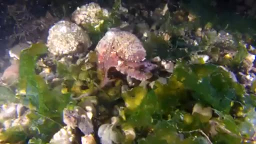
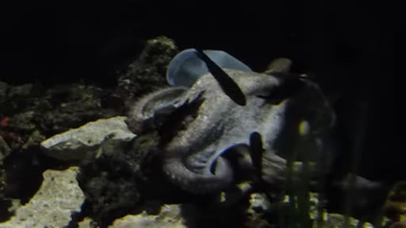
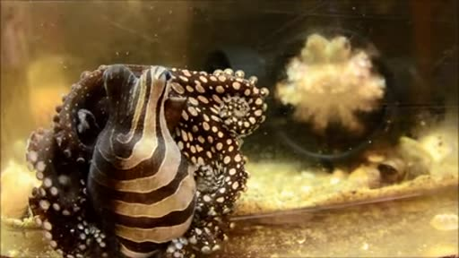

Video seçimi · Ahtapotun Üç Kalbi
Her sahne için seçilen videodan 3 kare (başından, ortasından, sonundan). Videonun tamamını izlemek için bağlantıya tıkla. Uygunsa issue'daki GÖRSEL ONAY kutusunu işaretle; Eğitim Labs TV videosu o zaman üretilir.
Sahne 1 · pixabay
This animal has three hearts. And its blood is blue.



Gemini: 7.0/10 · Gerçek ve canlı bir ahtapot doğal ortamında net olarak görünüyor, ancak görüntü kalitesi ve ışıklandırma orta düzeyde.
▶ Videonun tamamını Pixabay'da izle
octopus, walking, creature, animal, tentacles, underwater, ocean, sea, aquarium, fauna, ma · Pixabay Content License · başlangıç 0.3 sn
Sahne 2 · pixabay
Two hearts push blood through the gills. The third sends it to the rest of the body. And when the octopus swims, that third heart stops beating.
Gemini: 7.0/10 · Doğal ortamında gerçek ve canlı bir ahtapot net şekilde görülüyor; video formatı yanlardan siyah bantlı ve çözünürlük orta düzeyde.
▶ Videonun tamamını Pixabay'da izle
octopus, underwater, sea, coconut octopus, ocean, nature, animal · Pixabay Content License · başlangıç 0.3 sn
Sahne 3 · wikimedia
Its blood is blue because it carries oxygen with copper, not with iron like ours.



Gemini: 7.0/10 · Gerçek ve canlı bir ahtapot net bir şekilde görülüyor, vantuzları ve gözü belirgin ancak ortam ışığı biraz loş.
▶ Videonun tamamını Wikimedia'da izle
Sealife-Munich-Octopus.ogv · CC0 · MartinThoma, CC0, Wikimedia Commons · başlangıç 0.3 sn
Sahne 4 · wikimedia
Its arms think, too. About two thirds of its neurons are in its arms, working more than two thousand suckers.



Gemini: 7.0/10 · Akvaryum içerisinde gerçek ve canlı bir ahtapot net biçimde görülüyor, ancak ortam ve cam biraz bulanık.
▶ Videonun tamamını Wikimedia'da izle
Behavior-and-Body-Patterns-of-the-Larger-Pacific-Striped-Octopus-pone.0134152.s002.ogv · CC BY 4.0 · Caldwell R, Ross R, Rodaniche A, Huffard C, CC BY 4.0, Wikimedia Commons · başlangıç 0.3 sn
Sahne 6 · wikimedia
And with all of this, it lives only one to two years. Imagine what it could learn with more time.
Gemini: 7.0/10 · Akvaryum ortamında gerçek ve canlı bir ahtapot net bir şekilde görülüyor.
▶ Videonun tamamını Wikimedia'da izle
Behavior-and-Body-Patterns-of-the-Larger-Pacific-Striped-Octopus-pone.0134152.s006.ogv · CC BY 4.0 · Caldwell R, Ross R, Rodaniche A, Huffard C, CC BY 4.0, Wikimedia Commons · başlangıç 0.3 sn